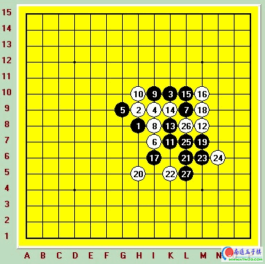

05年上海连珠名人战第二轮对葛凌峰[图]
#1 05年上海连珠名人战第二轮对葛凌峰[图]作者：有志青年 发表时间：2007-3-18 14:02:06

第一天比赛两轮。第一轮结束后，除了薛文曦六段在对日本前名人山口真琴的对局中残局阶段出现意外失误落败以外。其他的对局结果都还算正常。由于比赛只有16人参加从第二轮开始将盘盘是硬仗。这样的比赛虽然只有7轮。但难度决不下于全国赛的9轮。
第二轮我碰上了上海老一辈著名棋手葛凌峰六段，和他也不是第一次碰到。早在第二界全国赛的最后一轮就是遭遇的他，最后艰难取胜才没掉出前10。不过那个时候他状态很一般。而最近好多人都告诉我他状态非常好。我前一个星期在网络没有赢棋，其中就有一天是和他在ORC连续6盘都挂掉了。虽然在网络中下的棋当不得准，但还是能看出他的状态还是很不错。
第二轮：黑：吴镝 白：葛凌峰 黑胜
看对手就知道开局方肯定又是我了。开局依然是梳星，这是我最喜欢的开局。近来看到不少人认为梳星黑棋没什么好下的了。这让我很不理解。我在这些年的比赛中梳星下了几十局，黑的胜率达到了90%以上。也许是因为对手水平的参差不齐吧。但还是说明梳星黑棋是大有可为的。而且经常下梳星对中盘的角力是非常好的锻炼。好多棋手习惯于研究各种生僻开局。期待利用骗招或者弱招来取胜。这样的棋手面对堂堂正正的中盘角力时。都明显显得很弱智。也许我说的有点严重了。
黑五两打依然是第一轮下的两个点。这个时候葛老师的反应让我感觉到了点什么。因为在这个地方不需要考虑很长时间的。但葛老师面对我的两打却思考了很久。因为这两个打点中的第二点就是第二界全国赛上我战胜他的那个黑5。可能他在想后面有没有什么好的应对手法。看到这一切，我的心里已经在开心的笑了。很明显葛老师是想放弃那个点转而给我第一打点了，而第一打点正常黑7后白8走在H10的变化恰好是那天他六次战胜我的变化。想必他心理上对那个走法有些偏爱吧。而我在第一打点后从不喜欢走正常的黑7。我喜欢的是选择于黑5对称的黑7.那个变化白下的最强也就是到白12还原成正常变化而已。黑一点损失没有还能一路考验对手。。果然经过思考后葛老师留下了黑5最强点。当我落下黑7后，白8却没有走最强的点。直接活三的走法也是可以的。但黑全盘优势。白防的最好也就是个和棋。受到局面的影响，我的心情好了许多。开始不在思考这盘棋了转而看起了旁边曹东和山口真琴的松月对局。曹东在那盘棋里一个不是很关键的地方消耗了一个多小时去想一步棋，也成了这轮的一个小花絮。白10后的交换我以前下过多次。没怎么想就走到15.从17开始我准备从下方开始向左边空旷地带过渡了。可意外又出现了，这次比赛后我就觉得我的运气不错，对手一个一个接连走出失误.如果葛老师的18手直接走到20的位置。我将直接走到G11全盘四处撒网了。虽然优势但想取胜决非易事。可惜他走了必败的18。18看起来好象是可以把黑完全封锁在下面。但这手棋给白没带来任何实质上的便宜。反而在右下给黑带来了19的关键子力。如果没有19的存在黑在右下不可能取胜。但多了19这个点黑在这个局部优势巨大。直接可以必胜了。20后这个局部所有的变化我全部计算干净后开始动手了。21必胜，22最强防守。23跳活三白如果挡在中间黑25走在M5简单必胜形。24局面最强防。27后葛老师也看到了最后的线路。放弃了抵抗。这样我幸运的成为了第一天比赛中唯一保持全胜的棋手。通过这盘棋大家可以看到。一手看似没什么影响的，甚至是不错的18却是整盘棋的关键。因为这手带给了黑19手，而黑19手正是右下从优势到胜势产生质变的关键一手。目前国内棋手对这种棋厚度和无谓手的理解真正到位的并不多。而这种理解必须是经过大量对局通过经验和自己的领悟才能懂得的。有很多棋手计算也不错，研究也很多。但欠缺的正是这种理解。
#2 Re:05年上海连珠名人战第二轮对葛凌峰[图]作者：五子天下 发表时间：2008-3-30 11:05:23
理解~ 理解~ 境界 境界很重要~~~